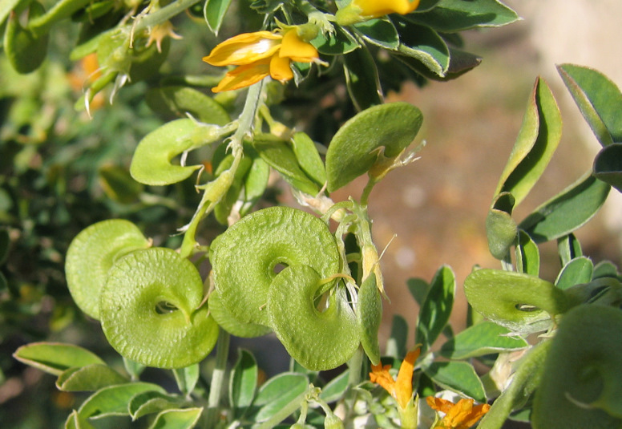
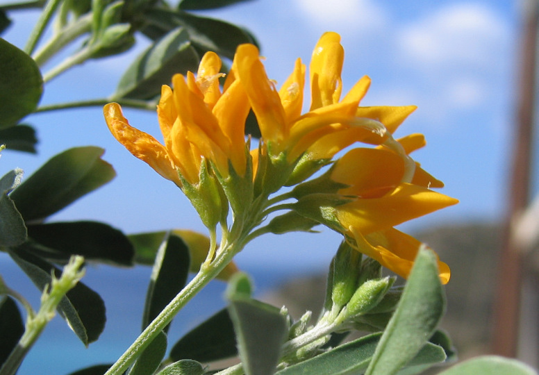
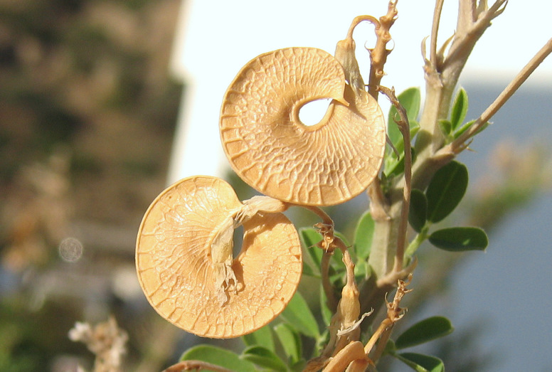
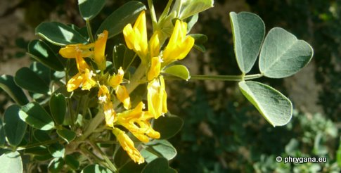
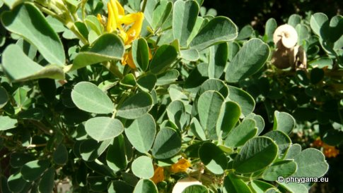
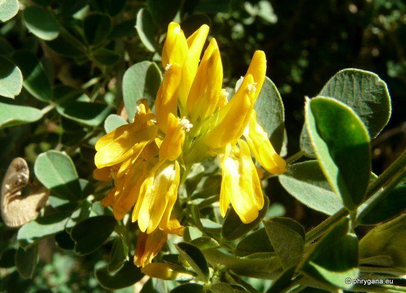

| PHRYGANA | Fauna | Flora |
additions nouveautés |
espèces species |
contact -
info - commentaires phrygana1 (at) gmail.com |
| Particularités crétoises | Galles et mines |
| Medicago arborea L. |
| 18 | Flora | FABACEAE | Trifolieae | Medicago L. |
 Medicago arborea Agia Galini 15 avril 2006 |
| fr: la Luzerne arborescente en: Tree medick | |
| Petit arbuste à écorce gris blanchâtre, crevassée. | |
| Feuilles: composées trifoliées, les folioles ovales à lancéolées, jusqu'à deux fois aussi longues que larges; stipules lancéolées, non dentées. | |
| Fleurs: jaunes à jaune orangé, 12 - 15 mm, groupées par 4 - 10 en racèmes un peu globuleux. | |
| Fruit: une gousse (12 - 15 mm) aplatie, spiralée à un tour (en forme de roue trouée au milieu), glabre et réticulée, brune à maturité, courtement pédonculée; graines 3.5 - 4 mm. | |
| Hauteur: 100 - 400 cm | Type biologique: nanophanérophyte cespiteux |
| Floraison: novembre décembre janvier février mars avril | |
| Altitudes: 0 - 500 m | |
| Statut en Crète: indigène, parfois cultivé | |
| Biotopes en Crète: olivaies, lieux rocheux, champs cultivés ou abandonnés, bords de chemins, phrygana, falaises | |
| Distribution: région Méditerranéenne | |
| Espèce héliophile | |
| Usages: parfois cultivée pour l'ornementaion des parcs et bords de route, sert de fourrage pour les chèvres. | |
|

Medicago arborea Agia Galini 15 avril 2006 |
|
 Medicago arborea Agia Galini 02 novembre 2006 |
|

 Medicago arborea Agia Galini 26 novembre 2011 |
|
 Medicago arborea Agia Galini 26 novembre 2011 |
| 07 janvier 2012 |
| © paul fontaine -- © Phrygana.eu 2007 -- 2013 |